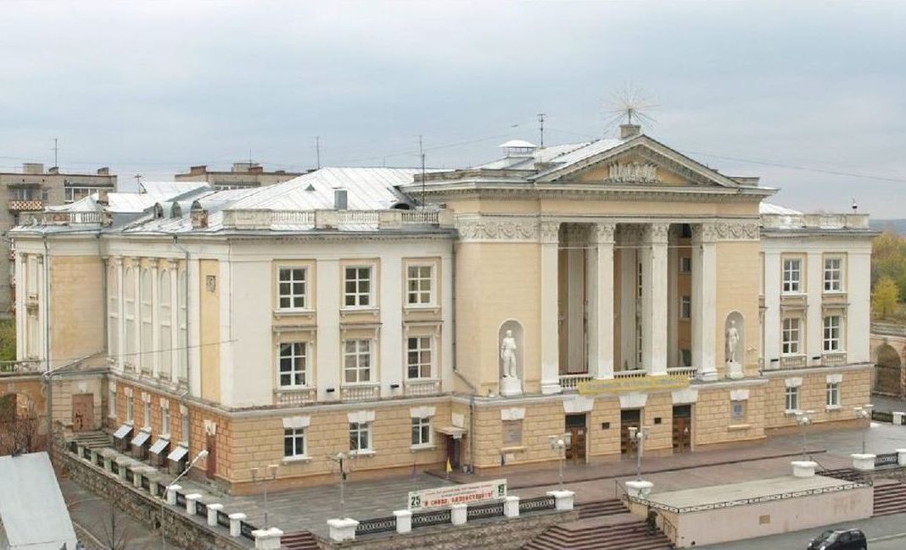

СКДЦ "Современник"
Мы предлагаем Вашему вниманию свод фактов, отражающих становление и развитие СКДЦ "Современник" как головного учреждения культуры города.
В 1957 г. состоялось открытие нового Дома культуры в Свердловске-45.
С 1961г. носит название "Современник". С 1957г. по 1993г. Дом культуры - подразделение Комбината "Электрохимприбор".
В 1975г. решением ЦК Профсоюзов Дому Культуры "Современник" присвоена I категория.
В 1977г Дому культуры присвоено звание "Коллектив имени 60 - летия СССР".
В 1979г. коллектив ДК награжден Дипломом ВЦСПС за культурное обслуживание тружеников села.
С 1980г. по 1991/92гг. в структуру ДК входил филиал "Звезда" пос. Горный.
В 1981г. за выполнение социалистических обязательств и в преддверие XXVI съезда КПСС ДК "Современник" занесен в Книгу почета города.
В 1983г. ДК "Современник" присужден Диплом за активное участие во Всесоюзном фестивале народного творчества.
С 1987г. по 1991г. ДК пос. Таежный входил в структуру Дома Культуры "Современник".
В 1993г. Дом культуры "Современник" из подчинения Комбинату ЭХП перешел в статус "муниципального" на основании постановления Главы администрации города Свердловск - 45 от 12 августа 1993г. № 596.
В 2001г. Культурно - оздоровительный Комплекс (Женский клуб) "Златоцвет" становится структурным подразделением ДК.
В 2006г. Муниципальное Учреждение "Дом культуры "Современник" преобразовано в МУ "Социально- культурно-досуговый центр "Современник".
01.01.2010г. в структуру СКДЦ "Современник" вошли ДК "Родник" (поселок Таежный), Клуб поселка Чащавита.
01.10.2011г. - СКДЦ "Современник" присвоен статус муниципального бюджетного учреждения (МБУ).
11.10.2011. - принят новый Устав МБУ СКДЦ "Современник"
Директора: И.Б. Клементов, Е.П. Маршаков, И.С. Ежов, Г.А. Журавлев, В.И. Ткачев, Ю.Я. Соловьев, В.М. Горев, А.М. Климов (с 1997г.)
Строительство Дома культуры началось в 1953г. (архитектор - лауреат Государственной премии РСФСР М.В. Братцев, проект - победитель Всероссийского конкурса на лучшие жилые и гражданские здания, выстроенные в городах и поселках РСФСР в 1948г.).
В 1957 году ДК введен в эксплуатацию, в его составе концертный зал на 526 мест, лекционный зал на 150 мест, спортивный зал, помещения для кружковых занятий, вспомогательные помещения. Первые творческие коллективы: академический (руководитель Ю.А. Басков) и народный (руководитель П.М. Барчуков) хоры; драматический кружок (руководитель З.Г. Бадьина); кружок баянистов (руководитель П.М. Барчуков); танцевальный (руководитель М.Ф. Биденко), вокальный (руководитель И.Б. Клементов), цирковой (руководитель М. Грибанов) коллективы; эстрадный оркестр (с 1958г., руководитель Е.П. Маршаков); киностудия "Колумб" (с 1959г., руководитель С.Е. Федоровский).
С 1957г. работал детский сектор (руководители: О.И. Платонова, Л.И. Смирнова, В.М. Кучур, Н.М. Упорова).
В 1970-1980-е активную работу проводил политико- массовый отдел (руководитель - отличник культпросветработы Г.А. Паклина), в 1981г. создан молодежный отдел (руководитель В.М. Кучур).
В 1950-х-1960-х в ДК проводились праздничные концерты, различные лектории, в т.ч. популярный у населения музыкальный лекторий "Красный огонек" (организатор Б.П. Захаров).
С 1957г. на площади перед ДК устанавливалась городская елка.